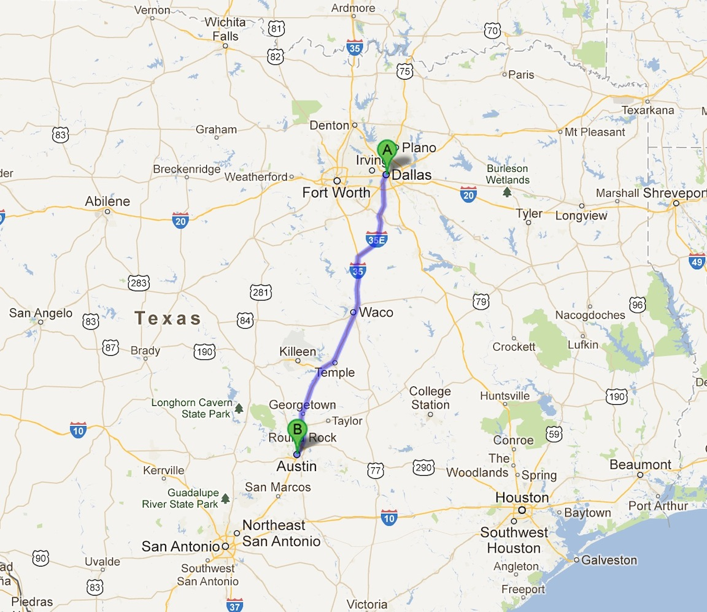
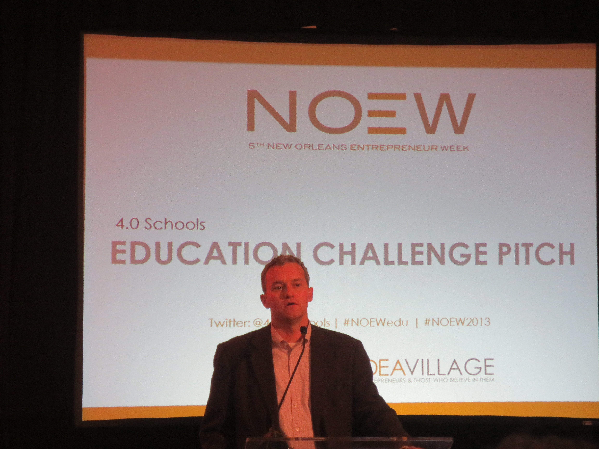
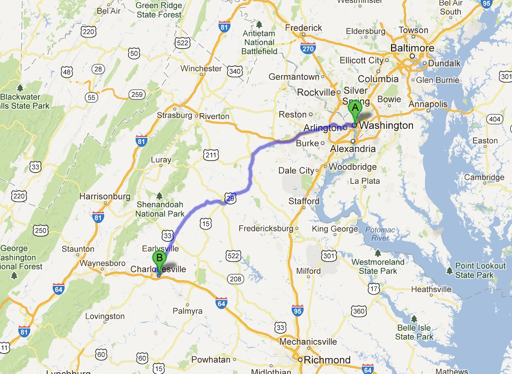

I am spending a few days in Los Alamos, New Mexico and then Moab, Utah to catch my breath. It's beautiful here. Here are some photos I took during my drive up from Lubbock, Texas and while walking around town in Los Alamos.

The open road ahead. Insert metaphysical hand-wavy quote here about the winding ... (read more)
The temperature is 25 degrees in Lubbock this morning. I didn't expect to wake up to snow in April.

The drive from Lubbock, TX to Los Alamos, NM.
I am ... (read more)
I am substituting a stop in Phoenix, Arizona for my planned trip to Flagstaff. The switch was made after much feedback from people in Memphis, Dallas, and Austin.

I will still drive through Flagstaff on my way to Phoenix on Sunday but I ... (read more)
I have been on the road for one month meeting with startups, software developers, and organizations dedicated to creating a greater entrepreneurial ecosystem in the United States.
Twenty percent of my time and cities are behind me. I have driven just over 2600 miles of my projected 10k+ miles according to my aggregated daily mileage totals. This post contains my initial thoughts and ... (read more)
It is really tough to leave Austin.

The drive from Austin, TX to Lubbock, TX.
Nothing against Lubbock. Austin is just an amazing city with great weather, friendly, ... (read more)
I've been catching up on reading my book backlog while traveling over these five months on the road from March through August. During my time in Dallas I purchased Starting and Sustaining by Garrett Dimon. At $99 for the book plus spreadsheet it is quite a bit more expensive than the other books I have picked up ... (read more)
After a morning meeting with Tech Wildcatters I head to Austin, Texas.
The drive from Dallas, TX to Austin, TX.
I will hopefully avoid most of the city-to-city traffic ... (read more)
The Gravity Center (@gravity_centre) in Plano, Texas is an early stage incubator funded by Alcatel-Lucent and supported by corporate innovation programs AT&T Foundry and ng Connect. The incubator's space north of Dallas provides ... (read more)
I am on the road to Dallas early today.

The drive from Memphis, TN to Dallas, TX.
The seven hour drive from Memphis to Dallas is a bit longer than the trek from New ... (read more)
On Monday night I gave a talk on Git and Github workflows to Memphis Python. The venue, the Fedex Institute of Technology, at University of Memphis was great. The turnout was fantastic with about ... (read more)
After a fantastic week in New Orleans, I'm heading up to Memphis, Tennessee for a four day visit.

The drive from New Orleans, LA to Memphis, TN.
Memphis is ... (read more)
I just spent the past week in New Orleans (NOLA) at IdeaVillage's New Orleans Entrepreneurship Week (NOEW). This is only my third city of thirty over the next five months so I can't yet draw any big picture conclusions. However, it feels like something special going on down here in ... (read more)
4.0 Schools in New Orleans is a design lab for startups and innovators working to transform education. I have been hanging out around the 4.0 Schools office throughout the week during IdeaVillage's New Orleans Entrepreneurship Week (NOEW). Part of my time here was spent ... (read more)
Eight MBA teams worked with local entrepreneurs during New Orleans Entrepreneurship Week. The teams were advised by employees from Google, Salesforce, Silverline, and Excella Consulting on subjects where they had gaps in experience, such as developing software platform roadmaps. Overall though it was the teams' extensive work throughout the week that created value for the entrepreneurs. This ... (read more)
This afternoon was pitch day for companies in the 4.0 Schools' incubator. Matt Candler provided a great introduction for why these companies matter to the learning community.
Matt Candler, founder of 4.0 Schools, introducing the ... (read more)

New Orleans' skyline at 630am in the morning the day after my arrival.
Yesterday I arrived in New Orleans, Louisiana after a long twelve hour drive down from Charlotte, North Carolina.
I am here ... (read more)
Several days of catching up with friends and writing in Charlotte gives way for a week in New Orleans.

The drive from Charlotte, NC to New Orleans, LA
New ... (read more)
Hey PyCon!
My friend Andrew Baker was awesome enough to present a lightning talk on Coding Across America this morning.
If you're a software developer or ... (read more)
Here are a few "rear of the car"-perspective pictures from the first five days in Charlottesville. The first several pictures were taken during the full days I had in Charlottesville when I found an interesting place to pull over. The final picture was taken in Virginia on the way to Charlotte, North Carolina.
During my time in Charlottesville I met with Arin Sime of ... (read more)
There are over 800,000 apps in both Apple's iOS store and Google's Play store.
If you want to build a mobile app, why would you pay a development team significant money to create it? Surely you can hire a smart teenager down the block to "build it for a few hundred ... (read more)
Outsourcing was once the biggest trend in the information technology world. The World is Flat by Tom Friedman explained that while the United States was focused on fighting terrorism after 9/11, the rest of the developing world was passing us by. Global information access through the Web meant ... (read more)
You've received an email from me asking if we can meet at your office or go out for lunch so that I can tell your story about solving interesting problems with software. This post attempts to answer some of the initial questions that may immediately come up on your side.
After reading through this post I am sure you will have further questions. When you reach that point please email me ... (read more)
A detour on my drive down from Washington, DC to Charlottesville, Virginia.
Today I left Washington, DC to drive to Charlottesville, Virginia. The drive is about two hours, Route 66 West to 29 South. I managed to fit all my stuff in my car - ... (read more)
Coding Across America begins with a short two hour trek from Washington, DC to Charlottesville, Virginia.
The drive from Washington, DC to ... (read more)
92% of people in the United States use their phones to send text messages. We rely so heavily on text messaging that most of us take the service for granted. Texting is just part of our daily lives.
But what would you do if you unexpectedly lost all of the text messages on your phone? Could AT&T or Verizon retrieve that data at your request?
The answer, shockingly, is no. ... (read more)
How do people facing life-altering health care decisions make the right choices for their treatment? People turn to family, friends, and the web to obtain advice outside of the doctor's office. However, information available through these channels often creates more questions than answers.
In 2007, Shub Debgupta and his wife faced a nightmare scenario during the pregancy of their first ... (read more)
My schedule is shifting slightly before I hit the road in less than two weeks. I have an opportunity to observe and assist at IdeaVillage's New Orleans Entrepreneurship Week (NOEW) from March 16th through the 22nd. That is a week earlier than I ... (read more)
Is there a better model for building certain types of software products used by the federal government? With billions of dollars* in failed information technology projects over the last decade, there certainly seems to be room for improvement.
One of the issues with products built for government workers is that commonly users who will actually work with the system do not control ... (read more)
Tim O'Reilly came to the Consumer Financial Protection Bureau (CFPB) on Thursday, February 14th. Tim discussed a range of topics centered on open government and transparency. I attended Tim's talk as part of the greater Technology & Innovation ... (read more)
Now things get interesting. There are only twenty two days remaining until I hit the road on March 9th. In the next few days I will publish a post about Tim O'Reilly's fascinating talk about open government yesterday at one of my clients - the Consumer Financial Protection Bureau (CFPB). Tim discussed a range of topics, including how CFPB can continue to set an example for transparency and ... (read more)
Washington, DC is most commonly associated with politics but it has quite a technology scene as well. I'm taking advantage of as many of the events I can attend before hitting the road in March. Today is DC Python's group coding session at SocialCode.
Developers are working on projects such as scientific and numeric ... (read more)
I finally got around to adding a Disqus-based comments system to this site. Currently all blog posts and the city research pages have an area for comments at the bottom.
The comment system needs to be tweaked. I'll probably modify it to allow anonymous posts. There are probably other settings I can change that will be ... (read more)
I just found out about Wikivoyage today. I can't believe I did not know about it earlier. Wikivoyage is Wikipedia for destinations. I will use Wikivoyage extensively for this trip as it complements my cities pages.
I have a bonus city for this trip in ... (read more)
With exactly two months until I hit the road my focus has now shifted to finishing my research on the cities I'll be visiting and communicating with tech groups and companies and I'll be meeting on the road.
I'm in the process of booking the hotels for the first ten cities I'll be in - that should take me through sometime in April. ... (read more)
Redding is a small town of about 90k residents in Northern California, about three and a half hours from San Francisco. From my initial research there doesn't seem to be much of a technology start up scene here. That's fine - this is another destination where I can spend some time programming and writing without interruptions.
Redding looks like a beautiful city (I've never been there ... (read more)
"Some convictions are so strong that the world must break to accommodate them."
I strongly hold two convictions:
I have not posted on this blog in a few weeks but work continues on researching my thirty destinations. I constantly add potential tech companies to their respective city pages as well as meet up groups and interesting spots to visit.
I already have a great group of both large and small tech companies with confirmed visit dates in various cities. Once I get a little closer to my launch ... (read more)
The schedule is now set. Thirty cities in just over five months (exactly five months and six days). March 9, 2013 to August 15, 2013.
The final city additions include Detroit, Buffalo (NY), and Boston while I cut Pittsburgh and Indianapolis since they took me too far south to visit Boston.
I am currently finishing up my research on each city and planning individual days when I ... (read more)
Why not San Francisco? Technically this stop is a combination of the areas in and around San Francisco, Palo Alto, and San Jose. There are so many interesting start ups, venture capital firms, and technology meetups it's difficult to know where to start.
I've never been to San Francisco (or CA before this trip). These will be ten very busy days talking to companies, other software ... (read more)
I have never been to Los Angeles before. The stories I hear about LA's massive traffic jams and major suburban sprawl remind me of Northern Virginia - only worse. A trip up the West Coast just wouldn't seem complete though without a stop in LA. And it'll a comparison point for what I see in San Diego, San Francisco, and Seattle's start up scenes.
Los Angeles is stop number twelve out of ... (read more)
San Diego was a late addition to my slate of destinations. I added San Diego for a couple of reasons. First, I ran into an old friend in DC who was back in town visiting from San Diego. She loves living in San Diego, asked me "why not visit?" and I didn't have a good answer for why I wasn't going. So that got me started thinking about it. Second, my brother hung out in San Diego for ... (read more)
I recently added Moab to my list of destinations after a couple of recommendations from people I randomly met. Moab looks amazing from photos but apparently none of them do it justice. "You have to see it in person" I'm told. So with that Moab will be destination number nine.
I expect that this will be the third stop in the leg of my trip that takes me out of the tech scene ... (read more)
Los Alamos, New Mexico is another one of those destinations that leaves people wondering "what does that have to do with tech"? It is definitely not a town that people associate with startups like Palo Alto, Seattle, Boulder, or Austin. Still there is a lot of advanced research going on here although it's not well publicized outside of academic circles. Some of the work is classified ... (read more)
Lubbock is home to the Red Raiders of Texas Tech University and is about seven hours Northwest of Austin, Texas. Lubbock will be the seventh city I visit during Coding Across America. This stop begins the leg of my trip that will take me to some remote place in the Southwest United States, including Los Alamos, Moab, and Flagstaff.
It will be difficult to find technology-related ... (read more)
I found this post on the diminishing marginal utility of stuff climbing Hacker News yesterday morning and it resonated with me both in general and for my trip.
Particular lifestyles more easily lend themselves to having less things. For example, computer ... (read more)
Austin was the first city I put on the map during my road trip planning. I knew there was no way I was going to skip it or just spend a couple of days there. Nothing less than a full week will suffice. In fact, much of my early planning and building of this website was done while visiting Austin for a week in June 2012.
I've been to Austin three times previously. Every time has been ... (read more)
I work out almost every day and access to my gym in Arlington is convenient (a walk across the street). So figuring out how to stay in shape on the road has been a particular challenge. I don't think I'll have it completely figured out by the time I leave. It'll probably be something that evolves as I travel from one city to another.
Here are some of my thoughts outlining the approach ... (read more)
New Orleans has a strong, unique city culture. I previously traveled to New Orleans in 2010 although I was there for only a few short days. I have a couple of reasons for returning and making New Orleans the fifth destination on my trip.
First, one of the Excella Consulting founding partners, Burton White, is from New ... (read more)
Several of my DC friends previously lived in Memphis and recommended that I visit the city while I am travelling through Tennessee. There's great BBQ, high recommendations for Beale Street, and a different Midwestern culture that an East Coast kid like me should find interesting. Memphis is only three and a half ... (read more)
djangonauts.org is a well done centralized website for Django meetups across the United States. The Chicago Users Group originally registered the domain name for their own purposes but then realized it would be of benefit to the greater Django community to have a centralized location for all users groups.
I found out about ... (read more)
I am not planning to live out of my car while on my five month road trip like this guy did while bootstrapping his start up. But his determination to spend as little money as possible to start his company is impressive in a weird way. His Quora write up includes a bunch of ... (read more)
I have never been to Nashville before, so image I have in my head of what it's like is a gross generalization of what I am sure it actually is. I mainly envision country music, a South/Midwestern sort of pride by the people that reside there, and very little focus on new technology. I am probably wrong about those three generalizations.
I was pleasantly surprised once I began looking ... (read more)
I'm making a few changes to my planned route (which is now reflected in the embedded Google Map on the about page). These modifications are due to conversations I've recently had with several people familiar with these cities. I decided that based on their recommendations I would be missing out if I did not visit these destinations.
Since I am in the researching and planning phase, it's ... (read more)
There are several archetypal days I'll have over the course of four months on the road. Some types of days are more conducive than others for coding.
I need large blocks of time since it's difficult to context switch while deep diving into difficult problems while programming. Focused time just won't happen if I only have an hour here, 15 minutes there, to work. See Paul Graham's ... (read more)
One of my least favorite quotes is "everything happens for a reason." The connotation is clearer if you append "but I didn't plan it out that way" onto it.
Events happen (or "shit happens" if you prefer that expression). It's easy to ascribe attributes and reasons to those events afterwards. The human mind works this way naturally. Ascribing reasons to ... (read more)
I'm writing this post from Kansas City, Missouri. One of the things I find so striking here is how quiet it is downtown during the day on weekends. Part of the lack of people may be due to the 100+ degree weather, but my friend PJ who lives here says this is normal.
Compare the quiet here in Kansas City to the constant crowds that are out at all times of the day in Washington, DC or New ... (read more)
One of the things I constantly struggle with in my software development consulting career is balancing breadth versus depth.
When I graduated from JMU in 2005, I was not deep in anything related to my career. I had a very broad knowledge of computer science, Java programming, and a few pointers for where I should look next to ... (read more)
Originally my first stop was Charlotte, NC. Now it's stop #2. I used to live in Charlottesville, VA from 2007-09. Charlottesville's distance between DC and Charlotte makes it a good spot to spend a couple of days before heading out to new destinations. Charlottesville is one of those small towns that really grows on you. Given a solid financial situation, I'd love to have a weekend house here ... (read more)
I knew I needed a better camera than the one in my Droid 3 for this trip. At first I thought about digital SLRs, but the additional size, weight, and complexity turned me off to them. I am not currently interested enough in learning the intricate details of tuning a camera or changing a lens to take the perfect picture. It is unlikely I would gain any benefit from an SLR over a quality ... (read more)
Since coding is in the title of this site and my trip across the country, what will I be programming? Part of my excitement with the trip is having focused, dedicated blocks of time to sit in coffee shops or restaurants and work on projects I'm passionate about launching. While my development projects often shift every six months to a year, I'm sure I'll be working on some of all of the ... (read more)
By far my favorite part of planning and undertaking this trip is talking to people I've just met about where they've lived and where I should go. When you ask people where they are from and where they've visited the responses are often surprising. Asking detailed questions about where they recommend going if you only have a few days in town not only brings out useful responses, it's also a ... (read more)
Until I plan my exact trip route, book places to stay, and figure out what (if any) tech conferences I'm going to, it will be hard to determine an exact budget for my trip. However, I can create a ballpark figure based on averaging an aggressive budget and a conservative budget. "Conservative" in this case means I try to spend as little money as possible while in the aggressive ... (read more)
I recently remarked to someone I was talking to about my trip that it is odd knowing I will not be in Washington, DC at this same time next year. I've lived in Virginia for the past eleven years (4 @ JMU, 2 in Arlington, 2 1/2 in Charlottesville, 2 1/2 back in Arlington). It's easy to fall into a trap of taking things for granted when you know you always have them at your disposal. For ... (read more)
Charlotte, North Carolina is the first destination on my trip outside of Washington, DC. Charlotte is approximately 400 miles from DC (about 7 hours) and several people I know have moved to Charlotte to escape the government-centric DC area for careers focused on commercial business. Charlotte is also the largest city in North Carolina, and the second largest banking center in the US. This is ... (read more)
“Many wealthy people are little more than the janitors of their possessions.” - Frank Lloyd Wright
Several years ago I decided see if I could eventually fit all my possessions in my car. Until recently, this goal seemed like an impossible task. Look at how small that trunk is. The car has no back seat! I ... (read more)
The Coding Across America contributors page is a list of everyone that has in some way given me advice, recommendations, or in some way shaped my trip.
The four month journey I am starting in March is much too large to have planned and figured out just by myself. I want to recognize everyone ... (read more)
Here are the main places and events I intend to visit while on the road.
1. Meet ups
I have been to a bunch of great meet ups in the Washington, DC area. I am sure many of the destinations on the list also have great meet ups. I'll lean heavily towards areas that I work in, such as Python, web development, mobile development, and DevOps. However, if I see ... (read more)
It is important to focus on specific goals when undertaking any large project. I consider four months away from work to travel a major project, so here are my initial thoughts on what my goals are for Coding Across America.
1. Gain a greater understanding of tech culture across the United States
There is only so much you can learn about other locations by reading ... (read more)
Why travel across the United States for four months? There's a few ways to approach this question, so I'll answer three variations separately then bring it back together at the end.
1. Why travel at all?
I have lived in Virginia for the past ten years and New Jersey for the previous eighteen since I was born. I do not consider myself well-traveled even within the ... (read more)